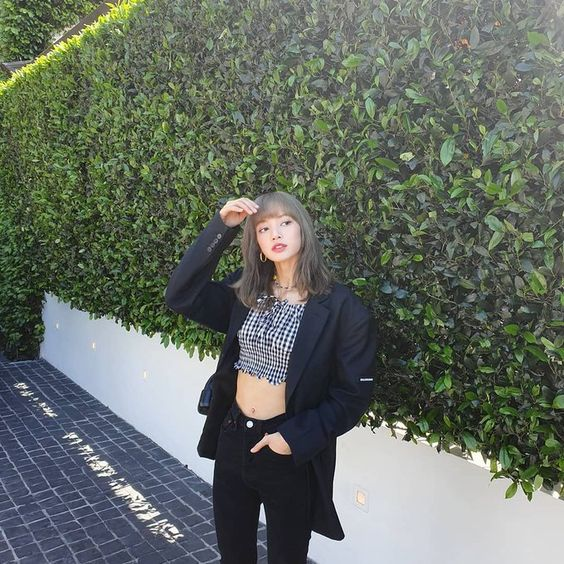
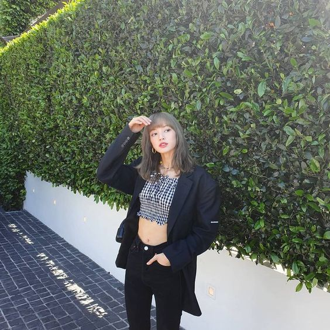
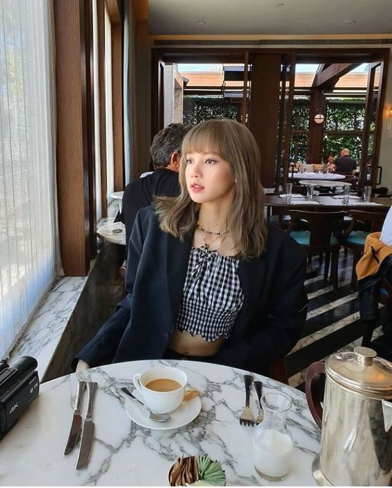
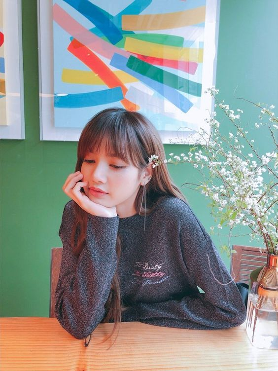
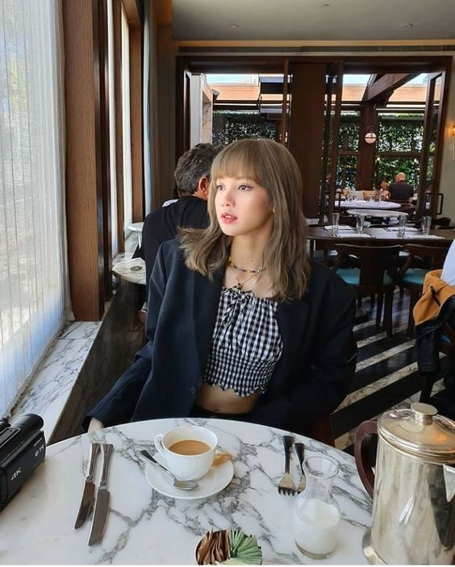
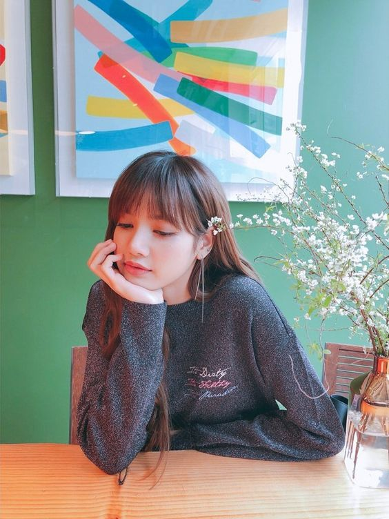

 



Stage Name: Lisa (리사)
Birth Name: Lalisa Manoban (ลลิสา มโนบาล) / Pranpriya Manoban (ปราณปริยา มโนบาล)
Nicknames: Lili, Lalice, Laliz, Pokpak
Position: Main Dancer, Lead Rapper, Sub Vocalist, Maknae
Birthday: March 27, 1997
Zodiac Sign: Aries
Birthplace: Buriram, Thailand
Height: 166.5 cm
Weight: 44.7 kg
Blood Type: O
MBTI Type: ESFJ
Lisa Facts
Lisa was born in Buriram Province, and moved in Bangkok, Thailand at age three.
Lisa can play guitar and piano.
She was the only person accepted to YG in the YG Audition in Thailand 2010.
She trained for 5 years 3 months (2011 April).
She became a trainee during middle school and lived in Korea since.
Lisa was the second member to be revealed.
She can speak Korean, English, Japanese, Thai and basic Chinese.
Members said she’s really playful and mischievous off stage.
Lisa plays Ukulele.
Lisa’s ideal type: She said she likes older guys, who can take good care of her. Also she likes kindhearted men, who can cook and who have a lifestyle that fits hers.